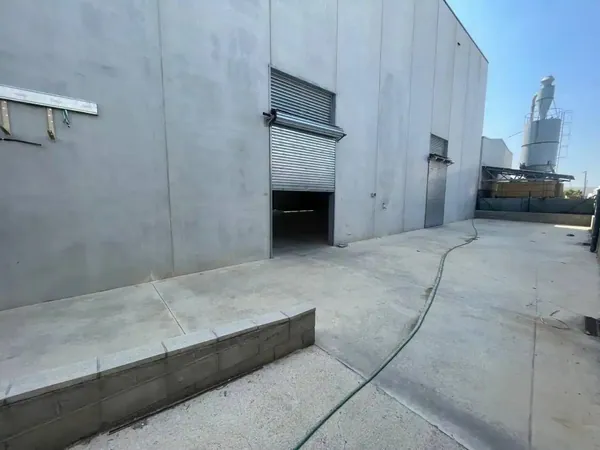
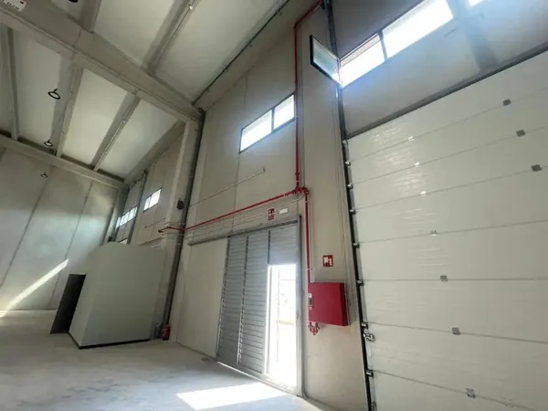
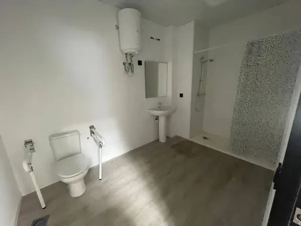

Plano · tocar un número de la lista lo marca acá
Letras: condiciones go/no-go · o: obra necesaria · números: lo que hay que medir o confirmar · c: lo que el chequeo de circulación marca hoy · trazos: el área o la franja de la cota · la línea azul: el largo libre a lo largo de la pista · ejes x/z: el origen de las cotas.
Condiciones go/no-go · si alguna sale mal, la nave se cae o hay que rehacer el layout
- Con margenDecide: ≥ 5,8 m libres bajo jácenas, cerchas, luminarias e instalaciones en la vertical de la plataforma: plataforma a 3 m + 2,4 m del rider + 0,4 m de instalaciones (PROGRAMA §1). Si da menos, se baja la plataforma (a lo medido − 2,8 m), nunca el run-out.Altura libre medida con láser sobre la plataforma (m):
6 notas del layout
fuente de la cota: publicada
riesgo: El largo de 26,25 m es lo que limita: plataforma a 3,0 m (se aprovecha poco la altura de 10,6 m), llano y run-out al mínimo, y sin kicker ni airbag.
supuesto: Alero 11,2 m y cumbrera 11,9 m estimados. Se toma una jácena delta con el intradós plano a la altura libre publicada de 10,60 m, ≈0,6 m de canto en los apoyos y ≈1,3 m en el centro (beamDepth 1,1 de media), y una pendiente de ≈7 % según la foto 5.
supuesto: La plataforma queda a 3,0 m por el largo, no por la altura: 3,0 + 2,4 = 5,4 m frente a 10,2 m disponibles. Con 1,95 m de plataforma, 7,25 m de rampa, 9 m de llano y 8 m de run-out son 26,20 m, 5 cm menos que la nave. La pendiente media es 22,5° y la máxima ≈31,8°, dentro de los 24° y 32°.
supuesto: match: lo que no se pudo medir con cámara ajustada queda como estaba: la pendiente de la cubierta (≈7 %, foto 5; match3: el remate del testero N cae sobre las fotos 0 y 4 a ≈5 px, sin medir la cumbrera). El aseo existente va en z 9,75-13,70 (foto 2, ±0,3 m; match3: la cara oeste cae sobre la foto 0 a ≈2 px y la cara sur sobre la foto 4, de x 16,85 a ≈19,0-19,1).
supuesto: match3: z de las bandas de lucernarios ±0,6 m. Fotos 0, 2 y 3: coinciden; foto 4 (cámara conjunta, 7 px): las placas caen al N del layout (banda S ≈0,9 m), pero la misma cámara deja la jácena 15-20 px por encima de la foto, así que en lo alto del encuadre el error es de ±0,5 m para la banda S (a ≈6 m) y ±1,5 m para la N (a ≈19 m): no mide; foto 5 (verificación de la ronda 1): la S 0,4-0,9 m más al S. Las fotos discrepan en sentidos opuestos y ninguna mide la z de las bandas con menos error que esa diferencia: no se mueven. Los ±0,6 m de la banda N no salen de ninguna foto: se le aplica el mismo margen que a la S. Medir en la visita: z de los bordes N y S de cada banda desde el testero N.
- Se decide en la visitaDecide: ≥ 26,2 m en línea recta a lo largo de la pista (plataforma 1,95 m, rampa, llano y el final más largo, run-out ≥ 8 m), del muro detrás de la plataforma al muro después del final. Si da menos, se acorta la rampa o el llano y se baja la plataforma, nunca el run-out.Distancia del muro al muro, a lo largo de la pista (m):
3 notas del layout
riesgo: El largo de 26,25 m es lo que limita: plataforma a 3,0 m (se aprovecha poco la altura de 10,6 m), llano y run-out al mínimo, y sin kicker ni airbag.
supuesto: Hay 3 líneas de 3,0 m (9,0 m) entre la cara del pilar de la fachada oeste (x 0,5) y los pilares centrales de los testeros (x 9,5). Así la pista ocupa el largo completo sin ningún pilar dentro y queda bajo los lucernarios. Se eligen 3 líneas y no 2 porque capacidad-y-unit-economics.md §1.3 dice que las clases simultáneas dependen de tener 2 o 3 líneas, y porque la prioridad es pista > pad > trampolines > gym.
supuesto: La plataforma queda a 3,0 m por el largo, no por la altura: 3,0 + 2,4 = 5,4 m frente a 10,2 m disponibles. Con 1,95 m de plataforma, 7,25 m de rampa, 9 m de llano y 8 m de run-out son 26,20 m, 5 cm menos que la nave. La pendiente media es 22,5° y la máxima ≈31,8°, dentro de los 24° y 32°.
- Con margenDecide: Dos salidas o más a la calle o a un espacio exterior seguro, con recorridos de evacuación ≤ 50 m (CTE DB-SI 3 §3, tabla 3.1), y sus puertas con ≥ 0,80 m de paso y 2,10 m bajo el dintel. Cada salida nueva solo vale si el muro da a la calle o a un patio con salida y la propiedad deja abrirla (las obras, en «Obra necesaria»).
- puerta peatonal de 2,2 m en la arista 1 (hueco 3, x 19,5 · z 8,07)
- puerta peatonal de 2,7 m en la arista 1 (hueco 5, x 19,5 · z 18,23) · aviso: puerta door:5: hojas de 1,34 m (entre 0,60 y 1,23 m)
Salidas confirmadas (cuáles, a dónde dan, ancho de paso):7 notas del layout
riesgo: El aseo adaptado nuevo ya no va contra la puerta de lamas 1: está en el hall norte, frente al alquiler (replanteo de transitabilidad, 24/11), y la puerta 1 queda libre por dentro. Su hoja peatonal de 1,0 m es la salida 2 y tiene que abrir hacia fuera con barra antipánico: eso es obra en fachada.
riesgo: Las dos salidas peatonales dan al mismo patio de calle. Una tercera por la fachada C (patio trasero de 162 m², encerrado entre la nave y los vecinos) solo cabría detrás de la línea 1, así que no se propone. Hay que confirmar con el ingeniero que basta con 2 salidas separadas 11 m en la misma fachada.
riesgo: Hay que proteger los pilares junto a la pista: el central oeste queda a ≈1,3 m del tubo de la línea 1 y el del testero sur está junto a la salida de riders. La pista y la plataforma tienen que ser autoportantes: colgar redes de correas prefabricadas de 13 m de luz requiere visto bueno estructural.
riesgo: Límites del visor que siguen afectando a esta nave (el JSON trae el dato real): los muros acaban a 0,15 m sobre la cubierta, sin el peto de ≈12,0 m (≈0,8 m sobre el alero) que tapa la cubierta por fuera (match3, fotos 13 y 14); el patio de calle de 9,8 m no aparece (exterior.yard solo admite patios laterales) y la acera va pegada a la fachada A; las juntas de panel solo se dibujan por dentro, y por fuera también son verticales (fotos 13-15); no se puede dibujar la banda de ≈3 m de la mitad oeste del testero N; las rejillas del muro C van como sectional-door porque no hay tipo rejilla; las puertas de lamas son una hoja lisa, sin lamas ni la hoja peatonal abierta; el aseo existente es una caja vacía (sin el inodoro, el lavabo, el termo ni la ducha de las fotos 11 y 12) y con puerta de madera en vez de la oscura; entre el rellano de la escalera y la plataforma queda la ranura de 0,20 m de la franja de la red; la red y el murete laterales no tienen la puerta por la que se sale del run-out al pasillo (las salidas de 1,2 m del final del run-out caen contra el testero S y el murete lateral las cierra); no se dibuja el extintor de la barandilla de la plataforma; y la vecina del sur sale como una nave genérica de 8-11 m, cuando la foto 13 muestra una construcción baja y el aserradero.
riesgo: Replanteo de transitabilidad (24/11, `walkabilityReport` de 24 errores a 0): el aseo adaptado nuevo estaba delante de la puerta de lamas 1 (hueco 3, la primera puerta peatonal de la calle, desde donde mide walk) y dejaba 0,65 m a todo lo de la nave; pasa al hall norte (2,20 × 2,40 con la puerta en el lado corto: el giro de Ø1,50 entra) y las dos puertas peatonales cuentan como salidas. La escalera de la plataforma pasa a 1,25 m de ancho y 7,50 m (huellas de 0,28 y 1,20 útiles; arranca en z 8,0), el retorno a 1,85 m libres, los vestuarios bajan a 3,20 × 5,25 (16,8 m² cada uno, 1,2 m² menos que el mínimo de PROGRAMA) y empiezan en z 9,5 para que el hall llegue al pie de la escalera, el paso del sur entre el vestuario M y el pad se cierra (el pad se entra por el este), y el lounge y el café quedan en 1,85 m de ancho (5,2 y 5,5 m², antes 9,5 y 10,0; la barra del café mira al lounge porque de cara a la seccional no entra) para dejar un paso de 1,20 m al pad: es lo que se cedió del programa. La recepción pierde 0,20 m de fondo (2,60 × 4,80) para que el pasillo de taquillas siga en 1,30 m frente a las máquinas expendedoras. Sin obra nueva en la nave.
supuesto: El rail de la línea 2 es el único rail del layout y es donde el visor monta el truco del rider. Un backside lipslide real: se entra paralelo al rail con el rail del lado de los talones, se pasa la COLA (tail) por encima con un giro backside de 90° y se desliza con el rail entre las fijaciones, mirando hacia arriba de la pista. Si la que cruza el rail es la punta (nose) y se desliza mirando pista abajo, es un backside boardslide. Se elige una línea con run-out para que la salida del truco sea plana.
supuesto: Entrada pública por la hoja peatonal de 1,0 m de la puerta de lamas 2, que se supone a nivel. Detrás queda un vestíbulo libre de 3,4 × 1,5 m (z 18,5-20,0) con la BIE 2 y un extintor. Recorrido accesible: calle, patio de 9,8 m, vestíbulo, pasillo de 1,40-1,70 m hasta el mostrador y los dos aseos adaptados, y lounge. La salida 2 es la hoja de la puerta de lamas 1, en el hall norte, a 11 m de la entrada y abierta al mismo patio (la variante «en el patio» de PROGRAMA.md §3). Las dos seccionales quedan como salidas de apoyo.
- Con margenDecide: Huella ≥ 0,28 m, contrahuella de 0,13 a 0,185 m y 0,54 ≤ 2C + H ≤ 0,70 (CTE DB-SUA 1 §4.2.1); ancho ≥ 1,20 m (PROGRAMA; el CTE pide 1,00-1,10); tramos de ≤ 2,25 m sin descanso. Una escalera existente que no cumple no sirve para el público (gym o altillo): hay que rehacerla o poner otra.
- de la plataforma (escalera): huella 0,28 m, contrahuella 0,17 m, ancho 1,24 m, tramo de 1,5 m sin descanso, sube 3 m
Huella × contrahuella × ancho de la escalera existente (m):8 notas del layout
riesgo: Límites del visor que siguen afectando a esta nave (el JSON trae el dato real): los muros acaban a 0,15 m sobre la cubierta, sin el peto de ≈12,0 m (≈0,8 m sobre el alero) que tapa la cubierta por fuera (match3, fotos 13 y 14); el patio de calle de 9,8 m no aparece (exterior.yard solo admite patios laterales) y la acera va pegada a la fachada A; las juntas de panel solo se dibujan por dentro, y por fuera también son verticales (fotos 13-15); no se puede dibujar la banda de ≈3 m de la mitad oeste del testero N; las rejillas del muro C van como sectional-door porque no hay tipo rejilla; las puertas de lamas son una hoja lisa, sin lamas ni la hoja peatonal abierta; el aseo existente es una caja vacía (sin el inodoro, el lavabo, el termo ni la ducha de las fotos 11 y 12) y con puerta de madera en vez de la oscura; entre el rellano de la escalera y la plataforma queda la ranura de 0,20 m de la franja de la red; la red y el murete laterales no tienen la puerta por la que se sale del run-out al pasillo (las salidas de 1,2 m del final del run-out caen contra el testero S y el murete lateral las cierra); no se dibuja el extintor de la barandilla de la plataforma; y la vecina del sur sale como una nave genérica de 8-11 m, cuando la foto 13 muestra una construcción baja y el aserradero.
riesgo: Replanteo de transitabilidad (24/11, `walkabilityReport` de 24 errores a 0): el aseo adaptado nuevo estaba delante de la puerta de lamas 1 (hueco 3, la primera puerta peatonal de la calle, desde donde mide walk) y dejaba 0,65 m a todo lo de la nave; pasa al hall norte (2,20 × 2,40 con la puerta en el lado corto: el giro de Ø1,50 entra) y las dos puertas peatonales cuentan como salidas. La escalera de la plataforma pasa a 1,25 m de ancho y 7,50 m (huellas de 0,28 y 1,20 útiles; arranca en z 8,0), el retorno a 1,85 m libres, los vestuarios bajan a 3,20 × 5,25 (16,8 m² cada uno, 1,2 m² menos que el mínimo de PROGRAMA) y empiezan en z 9,5 para que el hall llegue al pie de la escalera, el paso del sur entre el vestuario M y el pad se cierra (el pad se entra por el este), y el lounge y el café quedan en 1,85 m de ancho (5,2 y 5,5 m², antes 9,5 y 10,0; la barra del café mira al lounge porque de cara a la seccional no entra) para dejar un paso de 1,20 m al pad: es lo que se cedió del programa. La recepción pierde 0,20 m de fondo (2,60 × 4,80) para que el pasillo de taquillas siga en 1,30 m frente a las máquinas expendedoras. Sin obra nueva en la nave.
riesgo: Lo que el replanteo de transitabilidad (rp-c, 24/11) le costó a la circulación: el aseo adaptado, el vestuario F y el vestuario M forman un solo bloque (x 11,65-14,95, z 7,1-20,0) que llega al pad y a las expendedoras, y las puertas de los vestuarios abren al retorno (-x). La única unión entre el lado este (la entrada, hueco 5, las taquillas y la recepción) y el oeste (el retorno, los vestuarios y la escalera) es el paso de 1,30 m del hall norte (z 5,8-7,1), entre el frente del alquiler y el aseo adaptado, cuya puerta también abre ahí. De la entrada a la puerta del vestuario M hay ≈33 m sobre la planta (≈3,5 m hasta el pasillo de las taquillas, ≈12 por él, ≈5 por el hall y ≈12,5 por el retorno), contra 7,9 m en línea recta, y el último tramo va a contramano de los riders que suben del run-out a la escalera. Para recuperar el paso del sur hay que acortar el vestuario M o correr las expendedoras (un paso de ≥ 1,20 m en z ≈18,7-20,0), o abrir los vestuarios al pasillo de las taquillas (pide mover las taquillas, que van contra esa pared): decisión de programa, no está hecho.
supuesto: Sentido de bajada: la plataforma va contra el testero ciego norte y la bajada hacia el testero ciego sur, que lleva el mural del logo. La llegada (run-out de 8 m y quarter de 1,2 m) queda junto al pad, el lounge y la entrada principal, y el público ve el final de cada bajada. La escalera y la zona de equipamiento (alquiler, banco, taquillas, vestuarios y gym con la seccional 1) quedan al norte, al pie de la plataforma, y los flujos de riders y visitantes no se cruzan en la entrada.
supuesto: Recorrido de los riders: salen del run-out de las líneas 2-3 por una puerta en la red al pasillo de 1,60 m (x 9,7-11,3, fuera de la franja de 0,20 m de la red) y suben al norte hasta la escalera recta (2 tramos con descanso). La escalera arranca en z 7,65, también fuera de la franja, y desemboca en el lado este de la plataforma: el rellano va de z 0,75 a 1,95, con una chapa de paso sobre la franja. Los de la línea 1 vuelven del quarter y cruzan el final del run-out. Sin kicker: con 9 m de llano no entra un kicker de 1 m con su landing.
supuesto: Vistas propias (6): «calle» desde la acera frente a la puerta de lamas 2 (la entrada), «entrada» desde el vestíbulo mirando al oeste hacia el pad y la pista (360°), «hero» desde el deck del quarter en la esquina SO a 3,0 m (vista general, 360°), «gym» desde el hall norte y «escalera» desde el pasillo de retorno, mirando al pie de la escalera, y «pista» desde el mismo pasillo, mirando la rampa (la automática quedaba a 1,6 m de la red, con el centro contra el lateral de la pista, desde que el retorno se ensanchó). Las demás (plataforma, pista, final, recepción, alquiler, taquillas, lounge) son las automáticas.
supuesto: Taller y almacén de módulos: sin recinto propio desde que el gym ocupa su sitio. Los módulos de repuesto se guardan en el patio trasero (162 m², cerrado, fotos 13-15) y entran por la persiana N, que abre a la línea 1 al pie de la rampa, con un paño de red desmontable y la pista cerrada. Colchonetas, herramientas y el banco de tuning (2,0 × 0,8) van en el hueco bajo la plataforma (≈1,95 × 9 m, 2,8 m libres), con una puerta en el tabique oeste de la oficina, bajo el rellano de la escalera. No se dibuja porque cae bajo la pista.
supuesto: plantilla Stoke Mountain adaptada: plataforma 3.0 m × 1.95 m; drop-in de 1.15 m en 3.2 m; 2 terraza(s) de 3.6 m que caen 5° unidas por drops de 0.59 m en 2.6 m; carril de transición en la línea 1 (bajada de 7.7 m, kicker Accelerator y 0 rollers de 0,3 m); 4 módulos a escala real por terraza (T1 cajones cortos, T2 cajón largo / rail / roller, down rail en el último drop), solo donde se llega con velocidad (µ 0,09); misma huella, mismos finales (run-out ≥ 8 m / quarter) y escalera; los módulos anteriores quedan en slope.legacyModules.
- Se decide en la visitaDecide: Ningún pilar dentro de la pista; los de la franja de 0,2 m del murete y la red, forrados (el murete se corta en cada uno); el pasillo de retorno, ≥ 1,80 m libres con los pilares.Posición y sección de los pilares junto a la pista (m):
1 nota del layout
riesgo: Hay que proteger los pilares junto a la pista: el central oeste queda a ≈1,3 m del tubo de la línea 1 y el del testero sur está junto a la salida de riders. La pista y la plataforma tienen que ser autoportantes: colgar redes de correas prefabricadas de 13 m de luz requiere visto bueno estructural.
- Se decide en la visitaDecide: Confirmar con la agencia o la propiedad la dirección, la referencia catastral y qué nave es (las fotos y las superficies tienen que ser de esta).Referencia catastral y número confirmados:
1 nota del layout
riesgo: Identificación: el anuncio dice 'Calle Austria 13', que no existe en catastro. Hay que confirmar con FINCAS LEON (ref. 020760) que es Àustria 6, las medidas de 19,9 × 26,7 m y que el patio grande es el de la calle. Si la orientación fuera la inversa, el layout se espeja.
Obra necesaria · lo que la nave no tiene hoy y la propuesta necesita: decisiones del usuario, a ver en la visita si se puede
Medir y confirmar en la visita · 6, de las notas del layout
-
Detalle
El aseo existente va en z 9,75-13,70 (foto 2, ±0,3 m; match3: la cara oeste cae sobre la foto 0 a ≈2 px y la cara sur sobre la foto 4, de x 16,85 a ≈19,0-19,1).
Medido: -
Detalle
match3: z de las bandas de lucernarios ±0,6 m. Fotos 0, 2 y 3: coinciden; foto 4 (cámara conjunta, 7 px): las placas caen al N del layout (banda S ≈0,9 m), pero la misma cámara deja la jácena 15-20 px por encima de la foto, así que en lo alto del encuadre el error es de ±0,5 m para la banda S (a ≈6 m) y ±1,5 m para la N (a ≈19 m): no mide; foto 5 (verificación de la ronda 1): la S 0,4-0,9 m más al S. Las fotos discrepan en sentidos opuestos y ninguna mide la z de las bandas con menos error que esa diferencia: no se mueven. Los ±0,6 m de la banda N no salen de ninguna foto: se le aplica el mismo margen que a la S. Medir en la visita:
Medido: -
Detalle
medir en la visita (match3):
cámara en las fotos 2 y 0, ±0,1 m; la 2, z 6,89-9,39, sin releer; 20,9-21,0 con las cámaras de las fotos 1 y 2 de la ronda 1); (3) prioridad baja: fondo del aseo existente hacia el muro A (las fotos 2 y 4 lo llevan hasta el pilar central, x 19,0 ±0,2) y su extremo N (9,75 en la foto 2, ≈9,4 en la foto 0); (4) altura de la cumbrera (11,9 supuesta, pendiente ≈7 %); (5) altura del peto exterior (≈12,0 m, 11,7-12,2, en las fotos 13 y 14).
Medido: -
Detalle
Identificación: el anuncio dice 'Calle Austria 13', que no existe en catastro.
Si la orientación fuera la inversa, el layout se espeja.
Medido: -
Detalle
Las dos salidas peatonales dan al mismo patio de calle. Una tercera por la fachada C (patio trasero de 162 m², encerrado entre la nave y los vecinos) solo cabría detrás de la línea 1, así que no se propone.
Medido: -
Detalle
Las fotos 13-15 muestran el patio trasero (oeste) en pendiente y con un murete de bloque; del patio de calle (este) no hay ninguna foto por fuera.
No hay climatización y el volumen es de ≈5.900 m³.
Medido:
Circulación · lo que el chequeo marca hoy (CTE DB-SI 3, DB-SUA): ver en la visita si el paso real es así
- avisopuerta door:5: hojas de 1,34 m (entre 0,60 y 1,23 m)CTE DB-SI 3 §4.2 tabla 4.1; DB-SUA Anejo A · la puerta de lamas 2 (hueco 5, la entrada principal) es la existente de 2,7 m con una hoja peatonal de 1,0 m (foto 2, su `src`): walk la parte en dos hojas de 1,34 m; se entra y se sale por la hoja peatonal, y partir el resto es obra en fachada: aviso de la obra existente (lesfranqueses-corro, replanteo rp-c)
Fotos que conviene sacar
- Fachada y acera desde enfrente, con la calle a los dos lados (la llegada a pie y en coche, y dónde se aparca).
- Cada puerta (8: portón seccional, puerta peatonal) desde dentro y desde fuera, con el metro abierto en el paso libre y en la altura.
- La pared del arranque de la pista (detrás de la plataforma) de suelo a cubierta, con la jácena o la cercha de encima y el láser apuntando a su cara de abajo.
- El final de la pista: lo que hay después del run-out (muro, frente del altillo, salida) y el suelo de esa franja.
- Las dos medianeras de punta a punta, para contar pórticos y pilastras y ver si sobresalen.
- La cubierta y los lucernarios desde el centro de la nave, mirando a cada testero (para la luz del 3D y el estado de las placas).
- El suelo: estado, juntas, desniveles, sumideros y arquetas.
- El cuadro eléctrico, la acometida de agua y los desagües (vestuarios y aseos nuevos).
- B. Largo libre para la pista: una foto con la medida a la vista.
- E. Pilares en la pista, su franja o el retorno: una foto con la medida a la vista.
- F. Que sea la nave del anuncio: una foto con la medida a la vista.
- Repetir desde el mismo sitio las fotos del anuncio de abajo (el móvil a la altura de los ojos, sin zoom): con la nave medida se vuelven a ajustar las cámaras y el plano.


